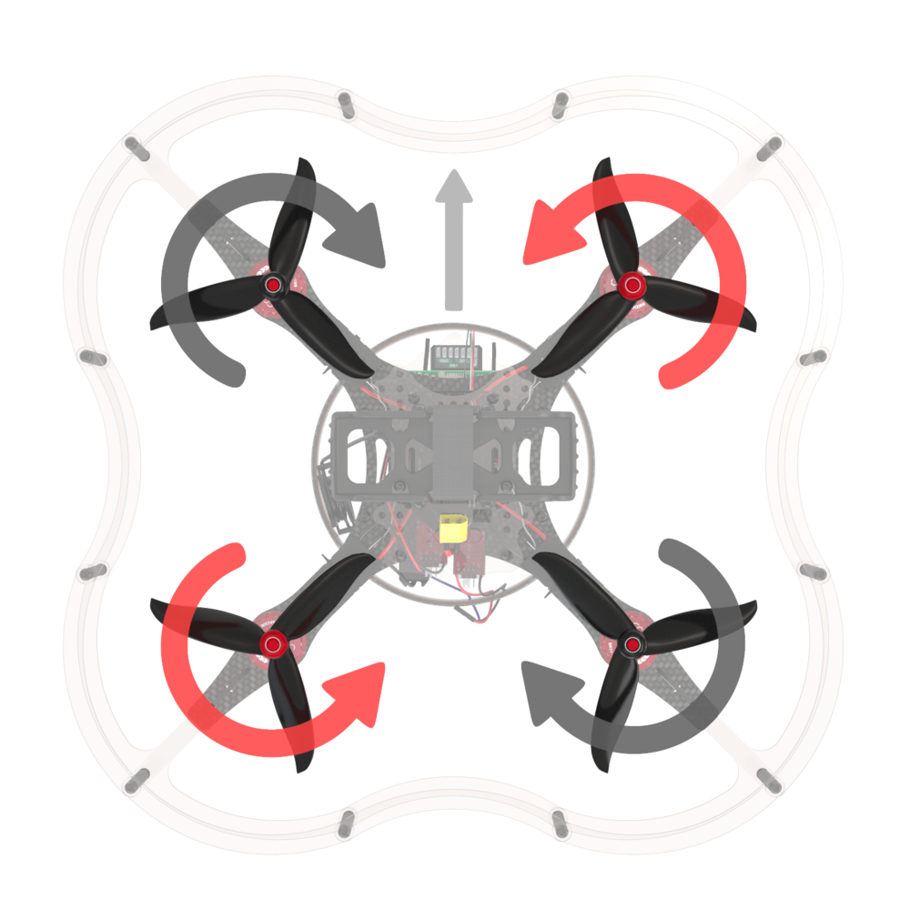
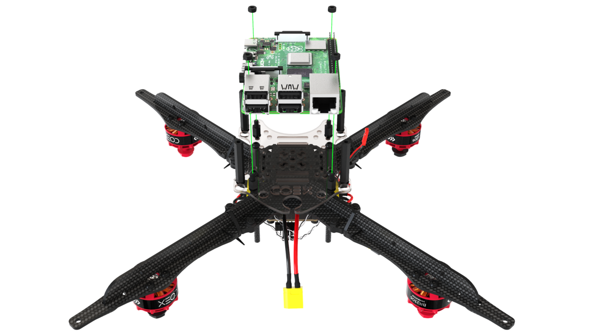

⚠️Der Zusammenbau soll nur darauf hinweisen welches die wichtigsten Schritte sind! Die Coex Anleitung sollte immer als Referenz genutzt werden.⚠️
Der Frame Ist aus Carbon und wird mit den mitgelieferten Schrauben und Muttern zusammengebaut. Dabei wird ein wenig Kraft benötigt, da die vorgefertigten Löcher im Frame relativ eng sind.
Beim installieren der Motoren muss besonders darauf geachtet werden, dass die motoren in der richtigen Reihenfolge und Richtung eingebaut werden (siehe Abbildung) und die 5mm Schrauben verwendet werden damit die Schrauben nicht die Windungen der Motoren benötigt werden.

Dabei die ESCs mit den mitgelieferten Kabelbindern am Frame befestigen und die Kabel zu den Motoren sicher zusammenstecken. Das PDB mit dem Batterie Kabel nach hinten befestigen. Die Kabel der ESCs mit dem PDB verbinden.
Den Flight Controller mit den mitgelieferten nylon Muttern auf das PDB schrauben.

Die Motoren mit dem Flightcontroller verbinden (siehe Abbildung).

Den Fligthcontroller mit dem PDB verbinden (mit einem der mitgelieferten 6-pin Kabel) (siehe Abbildung).

Bei dem Aufstecken des Raspberry Pi muss darauf geachtet werden, dass die Schraubenlöcher nicht perfekt passen und an dem Pi etwas material abgeschliffen werden muss. Die Schrauben sollten nicht zu fest angezogen werden, da sonst der Pi beschädigt werden kann.

Der Reciever muss mit dem roten doppelseitigen Klebeband auf das Plexiglas gekebt werden. Der Deckel der Kamera kann an dieser Stelle bereits abgenommen werden, da dieser später schwieriger zu erreichen ist. Das Flex Kabel der Kamera muss nun mitt der richtigen seite in den Raspberry Pi gesteckt werden.
Der Plastik Streifen auf dem der LED-Strip installiert wird muss sehr stark gebogen werden. Dafür wird einige kraft benötigt, das brechen ist jedoch nur schwer möglich. Der rest erfolgt nach der Anleitung.
Der Guard muss der Anleitung nach installiert werden.
Die Flight Preparation muss der Anleitung nach erfolgen.
QgroundControl ist ein Programm mit dem man den Flight Controller flashen, konfigurieren und kalibrieren kann.

Lade dir das Programm auf der offiziellen Website herunter und installiere es.
Die MicroSD Karte des Flight Controllers muss mit FAT32 formatiert werden.
Um den Flight Controller zu flashen, schließe den Flight Controller über USB an den PC an. Starte QGroundControl und klicke das icon links oben an. Wähle "Vehicle Setup" aus und klicke anschließend auf den "Firmware" Tab.

Trenne den Flight Cotroller vom PC (wenn verbunden) und schließe diesen nochmal an. Wähle in dem neuen Menü "PX4 Flight Stack" aus.
Setze einen Haken bei "Advanced Settings" und wähle "Custom firmware file..." aus. Wähle nun die Firmware aus, die du heruntergeladen hast.
Die Einstellungen sehen so aus:

Parameter die eingestellt werden müssen: Airframe, Radio, Sensoren, Flight Modes.

- MC_PITCHRATE_P = 0.087
- MC_PITCHRATE_I = 0.037
- MC_PITCHRATE_D = 0.0044
- MC_PITCH_P = 8.5
- MC_ROLLRATE_P = 0.087
- MC_ROLLRATE_I = 0.037
- MC_ROLLRATE_D = 0.0044
- MC_ROLL_P = 8.5
- MPC_XY_VEL_P = 0.11
- MPC_XY_VEL_D = 0.013
- MPC_XY_P = 1.1
- MPC_Z_VEL_P = 0.24
- MPC_Z_P = 1.2